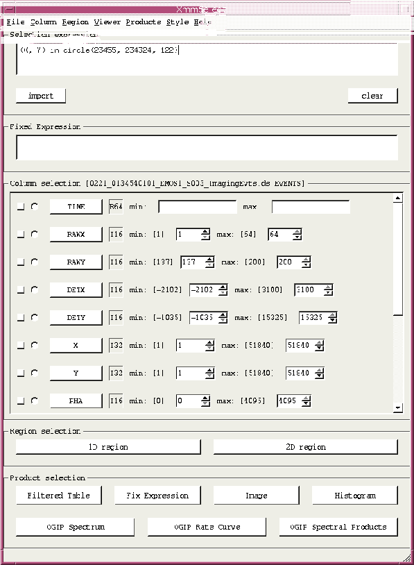

XMM-Newton Science Analysis System
xmmselect (xmmselect-2.65.12) [xmmsas_20170112_1337-16.0.0]
Meta Index
/
Home Page
/
Description
Detailed layout of GUI
If
xmmselect
is invoked it comes up with a main window as illustrated in the
following figure
:

Figure: Layout of elements in main
xmmselect
window
The window consists of the following five main areas:
Subsections
Menus
Selection expression
Fixed Expression
Column selection
Integer columns
Real columns
String columns
Boolean columns
Region selection
Product extraction
Fix expression
OGIP spectral products
XMM-Newton SOC/SSC -- 2017-01-12